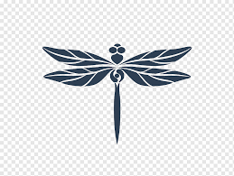

Hyperblog
Tu blog de cabecera
Este es el título atractivo e interesante del post
Y este es el parrafo de inicio donde vamos a explicar las cosas increibles que se pueden hacer con ramas

Los blogs son la mejor forma de compartir informacion y tus ideas. Mucho mas que ir a conferencias o salir en Youtube. Excepto si eres un rockstar. No lo eres... Por ahora.
Suscribete y dale like